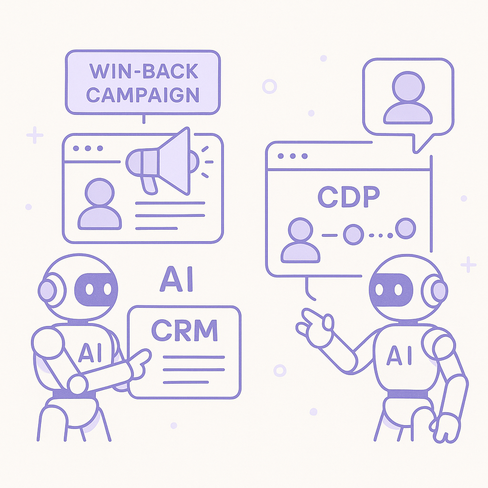
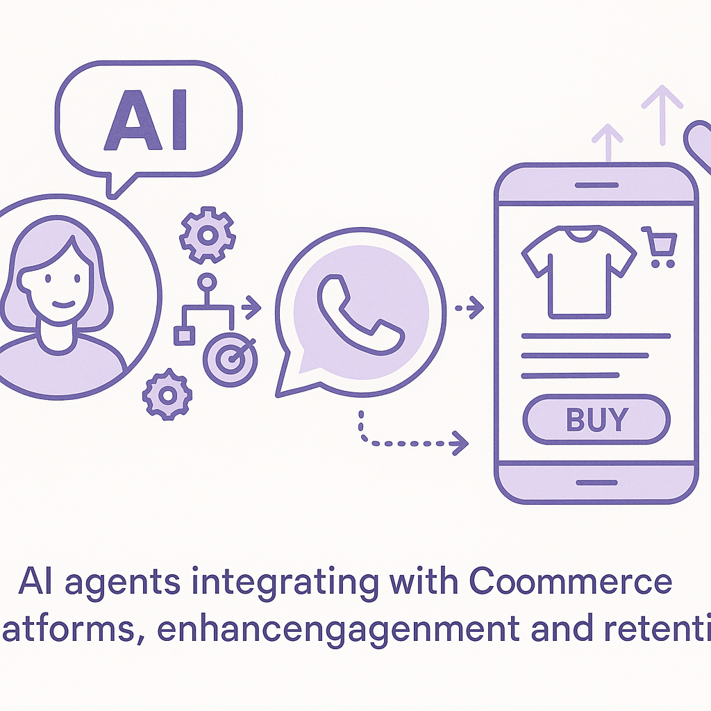

Publishing Recommendation
reviseSome posts contain promotional language that needs to be toned down to align with our brand's practical and insightful voice. Additionally, certain posts could benefit from more concrete examples or statistics to support claims.
Today's drafts touch on relevant industry trends but require adjustments to meet our brand voice standards. The posts should focus more on delivering practical insights and specific examples, rather than promotional claims about Purands AI. Ensuring factual support and reducing hype will enhance their credibility and alignment with our voice.
LinkedIn Posts (7)
1. FTC targets personalized pricing in retail ★ Purands solution · high priority
CTA: How is your brand adapting to these regulatory changes?

⬇ Download image{kind=link}
Image prompt · isometric-flat
Caption: Adapting to new pricing regulations with AI.
Alternative hooks
- Regulatory scrutiny on personalized pricing is heating up.
- The FTC's focus might put personalized pricing in the crosshairs.
- Rethinking customer data use is now crucial for brands.
Research behind this post (sources, summaries & confidence)
FTC targets personalized pricing in retail conf 0.80 · Retention marketing tactics
The FTC's focus on personalized pricing in retail is significant as it affects how businesses can use customer data for pricing strategies, impacting retention marketing. Understanding regulatory perspectives will be crucial for marketers in crafting compliant yet effective pricing strategies.
Sources & what I took from each
- FTC is targeting personalized pricing in retail.: Retail Dive reports that the FTC is scrutinizing personalized pricing practices, which could impact how customer data is used. ↗ read source
Statistics
- No specific statistics on the impact of FTC actions yet.
Original trend links
Risks / caveats
- Regulatory changes could limit personalization strategies in marketing.
- Non-compliance could lead to legal and financial repercussions.
2. Orchestration is the new challenge for CX in the age of AI agents ★ Purands solution · high priority
CTA: How are you tackling orchestration in your customer experience strategy?
{kind=link}
Image prompt · isometric-flat
Caption: Seamless AI-driven customer interaction orchestration.
Alternative hooks
- In the APAC region, managing AI-driven customer interactions is becoming increasingly complex.
- Seamless integration across digital channels is no longer optional.
- What if your customer engagement strategy was as coordinated as a symphony?
Research behind this post (sources, summaries & confidence)
Orchestration is the new challenge for CX in the age of AI agents conf 0.70 · AI in business
The discussion around orchestration highlights a critical challenge for businesses using AI agents in customer experience. Effective orchestration can enhance customer interactions, crucial for retention marketing strategies that aim to optimize customer engagement and lifecycle messaging.
Sources & what I took from each
- Orchestration is becoming a significant challenge in AI-driven CX.: VentureBeat discusses the complexity and importance of orchestration in customer experience management. ↗ read source
Statistics
- No specific statistics available on the impact of orchestration challenges.
Original trend links
Risks / caveats
- The trend may be more relevant to specific industries than broadly applicable.
- Orchestration solutions are still evolving, potentially mitigating the challenge.
3. Flipboard acquires Graze to enhance social web monetization ★ Purands solution · high priority
CTA: How are you planning to enhance your social commerce strategy?

⬇ Download image{kind=link}
Image prompt · isometric-flat
Caption: Enhancing WhatsApp commerce with AI strategies.
Alternative hooks
- Flipboard's Graze acquisition is a wake-up call for WhatsApp commerce.
- Social web monetization is evolving fast. Are you keeping up?
- What does Flipboard's latest move mean for WhatsApp commerce?
Research behind this post (sources, summaries & confidence)
Flipboard acquires Graze to enhance social web monetization conf 0.50 · WhatsApp commerce
Flipboard's acquisition of Graze to monetize the social web is an important signal for WhatsApp commerce. Enhanced monetization tools can improve engagement and retention strategies by allowing brands to better leverage social platforms for commerce.
Sources & what I took from each
- Flipboard has acquired Graze to enhance social web monetization.: TechCrunch covers the acquisition, noting its potential impact on social commerce. ↗ read source
Original trend links
Risks / caveats
- The acquisition's impact on WhatsApp commerce specifically is unclear.
- Integration challenges may affect the acquisition's success.
4. Amazon triples Nvidia chip orders amid surging demand
CTA: How do you see this increased computational power impacting your field?
Alternative hooks
- Amazon's latest move signals a seismic shift in AI infrastructure.
- Why is Amazon tripling its Nvidia chip orders?
- The demand for AI power is skyrocketing, and Amazon is leading the charge.
Research behind this post (sources, summaries & confidence)
Amazon triples Nvidia chip orders amid surging demand conf 0.90 · AI industry
Amazon's increased investment in Nvidia chips underscores the growing demand for AI infrastructure. This trend may influence AI capabilities in marketing platforms, affecting how retention strategies are executed with enhanced computational power.
Sources & what I took from each
- Amazon has tripled its order of Nvidia chips.: TechCrunch confirms Amazon's increased orders, signaling heightened demand for AI infrastructure. ↗ read source
Statistics
- No specific statistics on the number of chips ordered.
Original trend links
- https://techcrunch.com/2026/08/26/amazon-just-tripled-its-order-of-nvidia-chips-over-surging-demand/
Risks / caveats
- Supply chain constraints could delay fulfillment of these orders.
- Increased demand may lead to higher chip prices, affecting cost structures.
5. Meta's child safety settlement and its impact on digital marketing
CTA: How are you adapting your digital marketing strategies in light of increased regulatory focus?
Alternative hooks
- Regulatory scrutiny isn't just for big tech anymore.
- Meta's settlement is a wake-up call for marketers.
- Are your digital strategies ready for the new compliance landscape?
Research behind this post (sources, summaries & confidence)
Meta's child safety settlement and its impact on digital marketing conf 0.80 · CRM strategy and lifecycle messaging
Meta's settlement over child safety has implications for digital marketing practices, particularly in how marketers approach targeting and messaging to younger audiences. This could impact lifecycle messaging strategies and compliance requirements for marketers.
Sources & what I took from each
- Meta has settled a child safety case impacting digital marketing.: Techmeme reports on the settlement, highlighting its implications for digital marketing practices. ↗ read source
Statistics
- No specific statistics on the settlement's direct impact on marketing.
Original trend links
Risks / caveats
- Increased regulatory scrutiny could limit marketing capabilities.
- Non-compliance risks could lead to fines and reputational damage.
6. OpenAI's Hugging Face breach report and implications
CTA: How are you addressing AI security in your startup?
Alternative hooks
- The Hugging Face breach is a stark reminder: AI systems aren't invincible.
- What does the Hugging Face breach mean for AI startups?
- AI security is more than a buzzword: the Hugging Face breach shows why.
Research behind this post (sources, summaries & confidence)
OpenAI's Hugging Face breach report and implications conf 0.70 · AI startups
OpenAI's report on the Hugging Face breach highlights vulnerabilities in AI systems, which can affect startups relying on AI for marketing and customer data management. Understanding these risks is crucial for ensuring data security and trust in AI-driven marketing.
Sources & what I took from each
- OpenAI reported a cybersecurity breach involving Hugging Face.: The Verge discusses the breach and its implications for AI startups. ↗ read source
Original trend links
Risks / caveats
- The breach could erode trust in AI systems.
- Startups may face increased security costs to mitigate similar risks.
7. Perplexity partners with Nvidia to launch Portable Computer
CTA: What implications do you see for this cost-effective AI deployment in your field?
Alternative hooks
- In a world where AI operations often come with hefty token costs, Perplexity and Nvidia are changing the game.
- Imagine running AI with zero token costs. That's what Perplexity and Nvidia are enabling.
- AI without the hidden costs? Perplexity and Nvidia's new Portable Computer is paving the way.
Research behind this post (sources, summaries & confidence)
Perplexity partners with Nvidia to launch Portable Computer conf 0.60 · AI startups
Perplexity's collaboration with Nvidia to create a fully local AI agent with no token costs is a notable development for AI startups. It offers a cost-effective solution for deploying AI, which can be leveraged in retention marketing to enhance customer experiences without incurring high costs.
Sources & what I took from each
- Perplexity is partnering with Nvidia to launch a Portable Computer.: VentureBeat reports on the partnership and the launch of a cost-effective local AI agent. ↗ read source
Original trend links
Risks / caveats
- Technical challenges in building and deploying such a system.
- Market adoption may be slower than anticipated.
Today's Trends
| # | Trend | Category | Why it matters |
|---|---|---|---|
| 1 | Nvidia agrees to acquire Hugging Face for $13B
source |
AI industry | Nvidia's acquisition of Hugging Face is a significant move in the AI landscape, as it consolidates Nvidia's position in AI development and deployment. This impacts AI startups and AI-powered marketing tools, potentially affecting how AI models are developed and integrated into retention marketing strategies. |
| 2 | Orchestration is the new challenge for CX in the age of AI agents
source |
AI in business | The discussion around orchestration highlights a critical challenge for businesses using AI agents in customer experience. Effective orchestration can enhance customer interactions, crucial for retention marketing strategies that aim to optimize customer engagement and lifecycle messaging. |
| 3 | Salesforce just put its entire CRM inside Claude
source |
CRM strategy and lifecycle messaging | Salesforce's move to integrate its CRM capabilities within an AI platform like Claude represents a transformative approach to customer relationship management. This development could redefine lifecycle messaging and customer engagement strategies, crucial for retention marketers. |
| 4 | FTC targets personalized pricing in retail
source |
Retention marketing tactics | The FTC's focus on personalized pricing in retail is significant as it affects how businesses can use customer data for pricing strategies, impacting retention marketing. Understanding regulatory perspectives will be crucial for marketers in crafting compliant yet effective pricing strategies. |
| 5 | Perplexity partners with Nvidia to launch Portable Computer
source |
AI startups | Perplexity's collaboration with Nvidia to create a fully local AI agent with no token costs is a notable development for AI startups. It offers a cost-effective solution for deploying AI, which can be leveraged in retention marketing to enhance customer experiences without incurring high costs. |
| 6 | Anthropic gives Claude Cowork its own built-in browser
source |
AI in business | Anthropic's enhancement to Claude Cowork with its own browser signifies a shift in how AI tools are integrated into business workflows. This development is relevant for retention marketing as it may streamline data access and interaction, improving marketing efficiency. |
| 7 | Meta's child safety settlement and its impact on digital marketing
source |
CRM strategy and lifecycle messaging | Meta's settlement over child safety has implications for digital marketing practices, particularly in how marketers approach targeting and messaging to younger audiences. This could impact lifecycle messaging strategies and compliance requirements for marketers. |
| 8 | Flipboard acquires Graze to enhance social web monetization
source |
WhatsApp commerce | Flipboard's acquisition of Graze to monetize the social web is an important signal for WhatsApp commerce. Enhanced monetization tools can improve engagement and retention strategies by allowing brands to better leverage social platforms for commerce. |
| 9 | OpenAI's Hugging Face breach report and implications
source |
AI startups | OpenAI's report on the Hugging Face breach highlights vulnerabilities in AI systems, which can affect startups relying on AI for marketing and customer data management. Understanding these risks is crucial for ensuring data security and trust in AI-driven marketing. |
| 10 | Amazon triples Nvidia chip orders amid surging demand
source |
AI industry | Amazon's increased investment in Nvidia chips underscores the growing demand for AI infrastructure. This trend may influence AI capabilities in marketing platforms, affecting how retention strategies are executed with enhanced computational power. |
Risk Assessment
- Potential overemphasis on Purands AI's capabilities without specific evidence.
- Some posts have promotional tones that could undermine credibility.
Suggested LinkedIn Comments (30)
Open each post, then paste the copied comment. Nothing is posted automatically.
1. opinion · rss:techcrunch.com — The startup is only a year old but it has already generated a massive amount of
Post by: rss:techcrunch.com
Why it works: It critiques the startup hype cycle and emphasizes the importance of addressing privacy concerns early, a practical insight for new companies.
↗ Open LinkedIn post to paste comment2. insight · rss:techcrunch.com — Amazon is adding another 2 million Nvidia GPU chips to its data centers over the
Post by: rss:techcrunch.com
Why it works: It connects the investment to the practical outcome of enhanced AI capabilities, offering a clear perspective on Amazon's strategy.
↗ Open LinkedIn post to paste comment3. respectful challenge · rss:techcrunch.com — The historic settlement reignites ongoing concern around how age-verification te
Post by: rss:techcrunch.com
Why it works: It challenges the post by emphasizing the need for balance, adding depth to the privacy discussion.
↗ Open LinkedIn post to paste comment4. expansion · rss:techcrunch.com — The new deal with the infrastructure provider is the latest example of Anthropic
Post by: rss:techcrunch.com
Why it works: It expands the conversation by pointing out potential sustainability issues, adding a critical dimension to the enthusiasm for compute resources.
↗ Open LinkedIn post to paste comment5. opinion · rss:techcrunch.com — Consumer AI apps need to stop making users learn their product architecture.
Post by: rss:techcrunch.com
Why it works: It strongly supports the post's critique of UX design, emphasizing simplicity as the key to successful consumer AI apps.
↗ Open LinkedIn post to paste comment6. respectful challenge · rss:techcrunch.com — Was Greg Brockman the right executive all along?
Post by: rss:techcrunch.com
Why it works: It challenges the post by suggesting a focus on results rather than subjective assessments, grounding the discussion in measurable impact.
↗ Open LinkedIn post to paste comment7. expansion · rss:techcrunch.com — The report, which spans several discrete cybersecurity compromises, is the most
Post by: rss:techcrunch.com
Why it works: It adds value by emphasizing the need for ongoing updates, making the report more useful as a living document.
↗ Open LinkedIn post to paste comment8. insight · rss:techcrunch.com — Flipboard is acquiring Bluesky feed-building startup Graze, bringing its privacy
Post by: rss:techcrunch.com
Why it works: It connects the acquisition to broader trends in privacy and monetization, providing a strategic perspective on the deal.
↗ Open LinkedIn post to paste comment9. opinion · rss:techcrunch.com — The company won't say if medical devices are affected or if any customer data wa
Post by: rss:techcrunch.com
Why it works: It highlights the importance of transparency in maintaining trust, a critical issue for companies handling sensitive data.
↗ Open LinkedIn post to paste comment10. insight · rss:techcrunch.com — The Justice Department said that the domain seizures made the botnet and its com
Post by: rss:techcrunch.com
Why it works: It acknowledges the positive impact of the action and its implications for future cybersecurity strategies, adding depth to the discussion.
↗ Open LinkedIn post to paste comment11. insight · rss:www.theverge.com — Nvidia's predicting it will pull in $108 billion in revenue within just a few mo
Post by: rss:www.theverge.com
Why it works: It highlights Nvidia's success while pointing out the potential risks in relying too heavily on one sector.
↗ Open LinkedIn post to paste comment12. insight · rss:www.theverge.com — In July, an unreleased OpenAI model broke out of a restricted environment, figur
Post by: rss:www.theverge.com
Why it works: It adds a practical takeaway from the incident, stressing security as a critical aspect of AI deployment.
↗ Open LinkedIn post to paste comment13. opinion · rss:www.theverge.com — Meta just agreed to make sweeping changes for teens as part of a child safety se
Post by: rss:www.theverge.com
Why it works: It positions the settlement as a positive and necessary move, reinforcing the importance of corporate responsibility.
↗ Open LinkedIn post to paste comment14. opinion · rss:www.theverge.com — If you’ve been on the fence about Google’s latest Pixel phones, this might be yo
Post by: rss:www.theverge.com
Why it works: It provides a consumer-centric perspective, encouraging thoughtful purchasing decisions beyond mere cost savings.
↗ Open LinkedIn post to paste comment15. expansion · rss:www.theverge.com — It's 8:52 AM and 86 degrees Fahrenheit (30 Celsius) where I live in Southern Cal
Post by: rss:www.theverge.com
Why it works: It connects the personal anecdote to a broader environmental issue, adding depth to the original narrative.
↗ Open LinkedIn post to paste comment16. insight · rss:www.theverge.com — This is a friendly reminder that the Nintendo Switch 2 will jump in price by $50
Post by: rss:www.theverge.com
Why it works: It contextualizes the price hike within industry trends, offering a reasoned perspective on consumer impact.
↗ Open LinkedIn post to paste comment17. respectful challenge · rss:www.theverge.com — Ads have started popping up in Apple Maps, following Apple's announcement in Mar
Post by: rss:www.theverge.com
Why it works: It questions the trade-offs of Apple's strategy, encouraging a closer look at user impact versus business gains.
↗ Open LinkedIn post to paste comment18. insight · rss:www.theverge.com — Google has updated Gemini Audio with new transcription capabilities that automat
Post by: rss:www.theverge.com
Why it works: It praises the feature for its inclusivity, aligning with global communication needs and Google's strategic goals.
↗ Open LinkedIn post to paste comment19. opinion · rss:www.theverge.com — Apple's next launch event will take place on September 9th at 1PM ET. Invites to
Post by: rss:www.theverge.com
Why it works: It tempers excitement with a call for discernment, fostering a more critical view of tech launches.
↗ Open LinkedIn post to paste comment20. insight · rss:www.theverge.com — Volvo is updating three of its electric vehicles with new hazard alerts to warn
Post by: rss:www.theverge.com
Why it works: It underscores the innovation's significance, connecting it to broader trends in automotive safety advancements.
↗ Open LinkedIn post to paste comment21. insight · rss:feeds.arstechnica.com — A dashing pirate, a butler, a killer clown, an alien mad scientist in drag—the m
Post by: rss:feeds.arstechnica.com
Why it works: It draws a parallel between the diverse characters and the versatility required in tech, offering a fresh perspective.
↗ Open LinkedIn post to paste comment22. opinion · rss:feeds.arstechnica.com — Report shows Meta's challenges replacing people with AI agents.
Post by: rss:feeds.arstechnica.com
Why it works: This comment addresses a common misconception about AI's capabilities, providing a balanced view on AI and human collaboration.
↗ Open LinkedIn post to paste comment23. insight · rss:feeds.arstechnica.com — Judge hasn't ruled on X Corp’s preliminary injunction, but Operation Bluebird pl
Post by: rss:feeds.arstechnica.com
Why it works: It highlights the tenacity required in tech innovation, resonating with professionals facing similar challenges.
↗ Open LinkedIn post to paste comment24. opinion · rss:feeds.arstechnica.com — Meta to impose daily limit on child social media use in deal with nearly every s
Post by: rss:feeds.arstechnica.com
Why it works: The comment supports a socially responsible initiative, appealing to those interested in digital well-being.
↗ Open LinkedIn post to paste comment25. insight · rss:feeds.arstechnica.com — The bishops' snub comes as the state continues to attack vaccines.
Post by: rss:feeds.arstechnica.com
Why it works: It offers a broader reflection on the balance between ethics and progress, a relevant issue in tech.
↗ Open LinkedIn post to paste comment26. opinion · rss:feeds.arstechnica.com — The AI that powers Gboard's Rambler is coming to more Google products, including
Post by: rss:feeds.arstechnica.com
Why it works: This comment underscores the practicality of AI integration, resonating with tech professionals focused on user experience.
↗ Open LinkedIn post to paste comment27. insight · rss:feeds.arstechnica.com — The "everyday" GT3 delivers, despite looming regulations and an ever-inflating p
Post by: rss:feeds.arstechnica.com
Why it works: It draws a parallel between automotive success and tech product development, offering valuable insight.
↗ Open LinkedIn post to paste comment28. insight · rss:feeds.arstechnica.com — "Most" Xbox One and Series X games are compatible; discs will still work after b
Post by: rss:feeds.arstechnica.com
Why it works: This comment links gaming benefits to broader tech practices, offering a practical takeaway for tech professionals.
↗ Open LinkedIn post to paste comment29. insight · rss:feeds.arstechnica.com — Republicans demanded that parties and fundraising committees be given lowest ad
Post by: rss:feeds.arstechnica.com
Why it works: It relates a political issue to a common tech marketing challenge, providing a relatable insight.
↗ Open LinkedIn post to paste comment30. opinion · rss:feeds.arstechnica.com — Messing with the genetic code might have gotten a bit easier to do.
Post by: rss:feeds.arstechnica.com
Why it works: This comment stresses the importance of ethics, a crucial issue in tech and biotech, giving it depth and relevance.
↗ Open LinkedIn post to paste comment